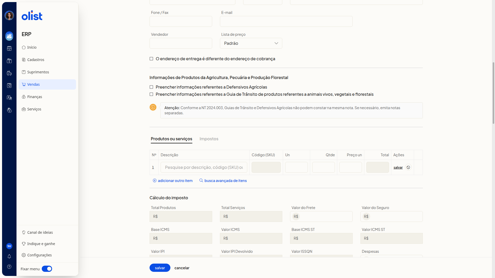
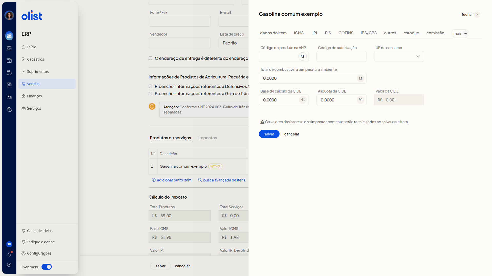
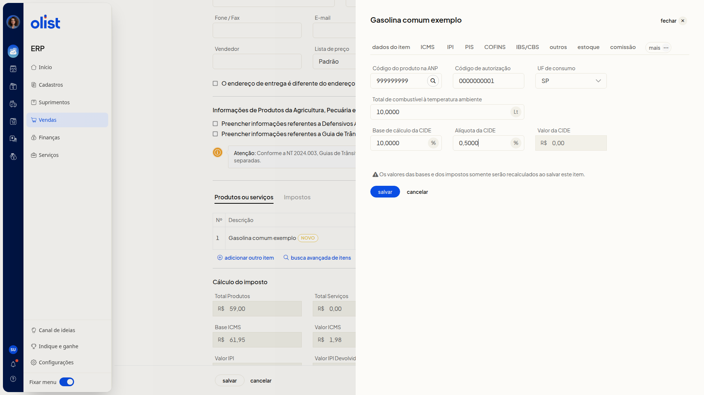
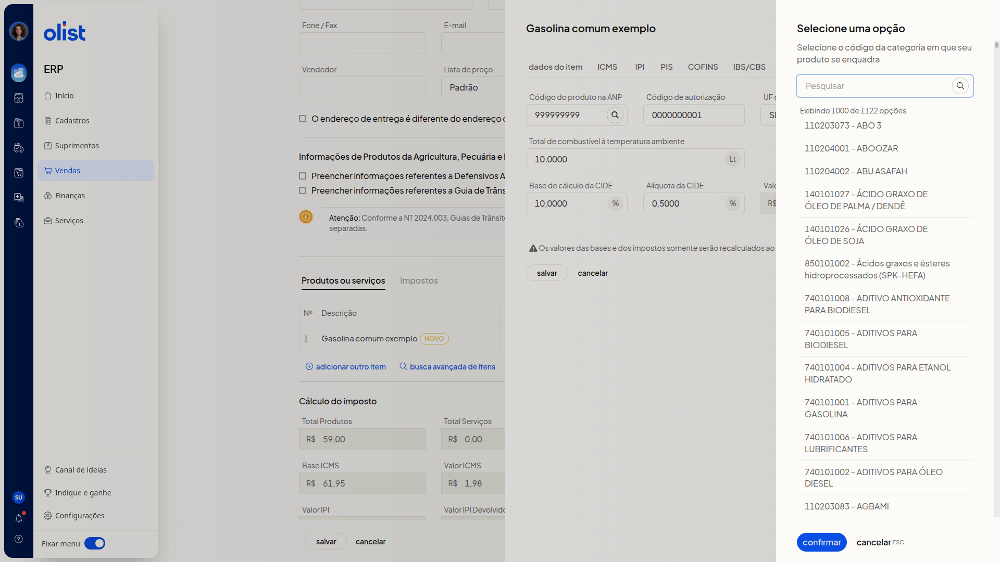
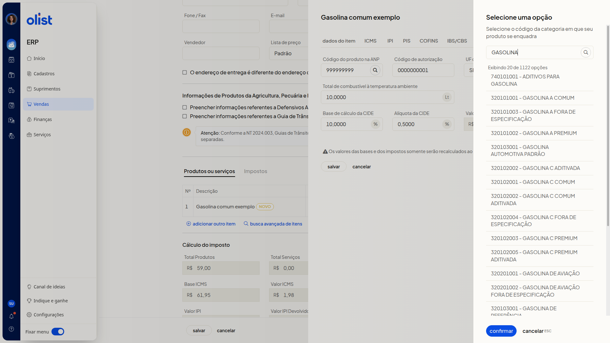

Como configurar produtos da tabela ANP (Combustíveis) na Nota Fiscal
Descrição
A aba Combustível do item da nota fiscal, no ERP da Olist, reúne o código do produto na tabela ANP, o código de autorização, a UF de consumo e os dados da CIDE. Com ela, você informa o combustível no item de uma nota nova, ainda sem emitir.
Na lista de Notas Fiscais, com Vendas em destaque no menu lateral, o caminho é o botão Incluir nota fiscal. Você pode preencher os dados pela tela da nota ou consultar o código da categoria ANP no painel de busca.
Pré-requisitos
- A lista de Notas Fiscais precisa estar acessível.
- Para abrir a aba Combustível, inclua um item na nota e abra o item em editar.
Importante
- Os valores das bases e dos impostos somente serão recalculados ao salvar este item.
- Nenhum campo da aba Combustível é obrigatório.
- O código digitado em Código do produto na ANP permanece no campo até a confirmação no painel Selecione uma opção.
Instruções
Pela tela da nota fiscal
- Acesse a lista de Notas Fiscais e clique em Incluir nota fiscal. O formulário de uma nota nova abre, sem emitir. Alguns dados de cabeçalho já vêm preenchidos, entre eles Tipo de Saída Emissão própria, Natureza da operação Venda de mercadorias e Finalidade NF-e normal.
Dados da linha do item
-
Em Produtos ou serviços, informe os dados da linha. Nenhum destes campos é obrigatório. O total da linha é calculado na hora.
- Descrição
- Un
- Qtde: quantidade com duas casas decimais, por exemplo 10,00
- Preço un: valor com duas casas decimais, por exemplo R$ 5,90

-
Clique no salvar da linha do item, não no Salvar do rodapé da nota. O item entra na tabela com o selo Novo.
-
Clique em editar na linha do item, depois em mais e em Combustível.

Campos da aba Combustível
-
Preencha os campos abaixo. Nenhum é obrigatório. Para localizar o código na tabela, siga a consulta do código do produto na ANP. A aba traz Salvar e Cancelar do item. O item permanece na nota não salva e não emitida, com a aba preenchida e o aviso de recálculo ao salvar o item.
- Código do produto na ANP
- Código de autorização
- UF de consumo: lista de siglas de UF, com a opção Selecione
- Total de combustível à temperatura ambiente: quantidade com 4 casas decimais e unidade Lt, por exemplo 10,0000
- Base de cálculo da CIDE: valor com 4 casas decimais e sufixo %, por exemplo 10,0000
- Alíquota da CIDE: percentual com 4 casas decimais e sufixo %, por exemplo 0,5000
- Valor da CIDE: valor com prefixo R$

Consulta do código do produto na ANP
Na lista de Notas Fiscais, inclua o item e siga editar > mais > Combustível. Com a aba aberta, consulte o código sem salvar a nota.
-
Clique no botão de busca ao lado de Código do produto na ANP. O painel Selecione uma opção lista as categorias e oferece confirmar e cancelar.

-
Leia a orientação Selecione o código da categoria em que seu produto se enquadra. Filtre no campo Pesquisar. Ao pesquisar GASOLINA, a lista mostra categorias de gasolina. Cada opção aparece como código de 9 dígitos, hífen e descrição, por exemplo 320101001 - GASOLINA A COMUM. O código já digitado permanece até a confirmação, e a consulta não salva a nota.

Resultado
O item aparece em Produtos ou serviços com a descrição informada e o selo Novo, e a nota continua não salva e não emitida. No painel Selecione uma opção, as categorias ANP filtradas ficam listadas, e o código digitado em Código do produto na ANP segue no campo até a confirmação.
Informações adicionais
O cálculo do imposto exibe totais depois de incluir o item
Depois que o item entra em Produtos ou serviços, Cálculo do imposto passa a exibir totais, com Cálculo automático de imposto ligado.
Links relacionados
Se você precisar de ajuda para configurar o combustível na nota, fale com o suporte.